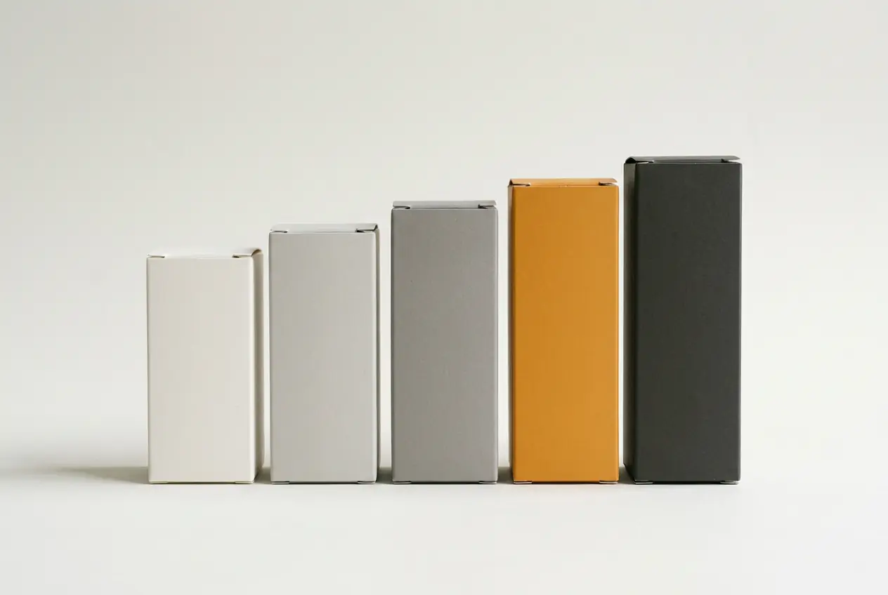
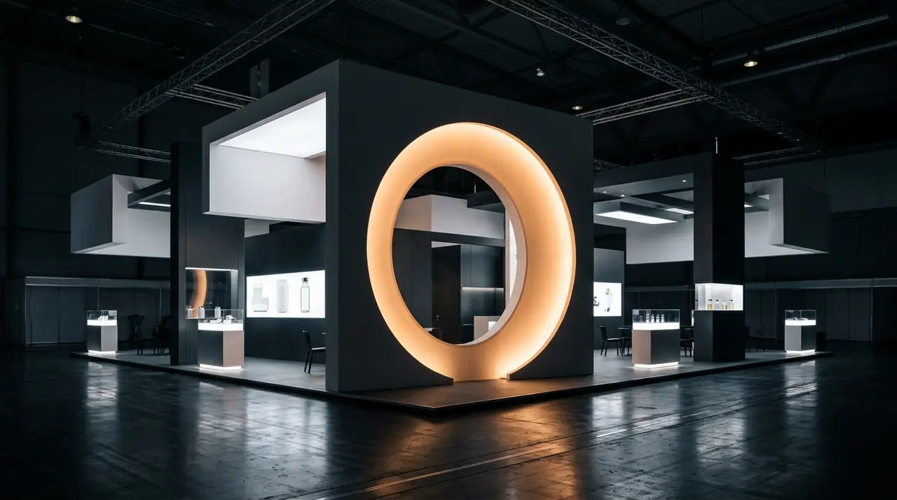

A full pharmaceutical catalogue that had to read as scientifically credible and future-facing at the same time — mature enough to trust, current enough to feel new.
A compressed circle unfurls into a perfect one.
Context
Evolab Laboratories manufactures and distributes a full pharmaceutical catalogue in Algeria — prescription and over-the-counter products sold through pharmacies, prescribed by physicians and bought by patients who are unwell and in a hurry.
Three audiences, three different reasons to trust a box, and one identity that had to satisfy all of them without splitting into three.
Challenge
The existing brand read as established but dated, and the catalogue had grown faster than any system governing it. Products that shared a manufacturer did not look like they shared anything else.
The real problem was not the logo. It was that no rule existed for what a new SKU should look like, so every launch was an argument.
Role
Creative direction across the whole programme: identity, the packaging system, art direction for the range photography, the exhibition stand from 3D through to the on-site build, and UX/UI direction for the site, delivered with a development partner.
Approach
The mark starts compressed and resolves into a true circle — a laboratory's work, drawn once. That single gesture then governs everything downstream: the palette runs the same unfurling in tone, yellow-green to deep blue, and the packaging hierarchy repeats it in the move from brand to molecule to dosage.
Because the mark had to survive a screen, a printed carton and one ink on blister foil, it was drawn in three modes from the start — gradient, tricolour, single-colour — rather than being improvised later by whoever was setting the artwork.
Three modes — gradient, tricolour, single-colour — because the same mark had to survive a screen, a printed carton and one ink on blister foil without becoming a different brand in each.
Futura against a custom display face. Geometry reads as science; the drawn face keeps it from reading as a hospital.
The palette runs yellow-green to deep blue — the unfurling again, in tone rather than in line.
Five SKUs — Evofenid, Evopiramide, Lansoprotect, Xyline, Omeprotect. Each regulation-compliant on its own, and unmistakably one family on a shelf.
A full exhibition stand for Algeria’s leading pharmaceutical trade show, carried from 3D renders through to the on-site build.
evolabdz.com — bilingual, UX/UI direction, delivered with a development partner.




Launched across Evolab’s full catalogue and staged live at Algeria’s top pharmaceutical exhibition.
A short verified quote from Evolab Laboratories, tied specifically to this project, belongs here. Left empty until it is supplied and cleared.